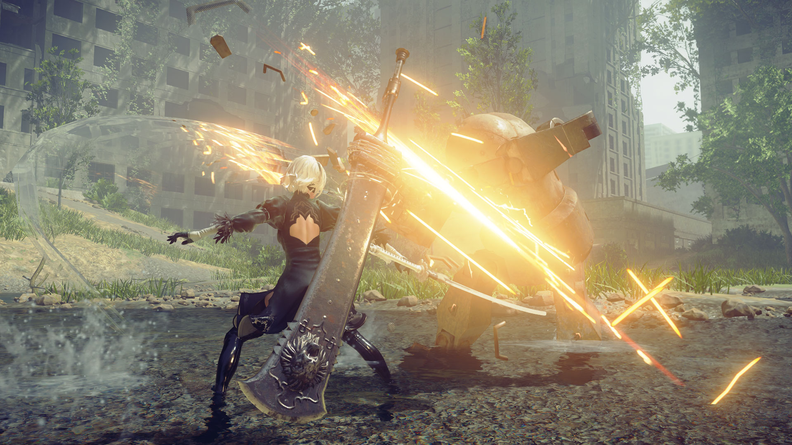
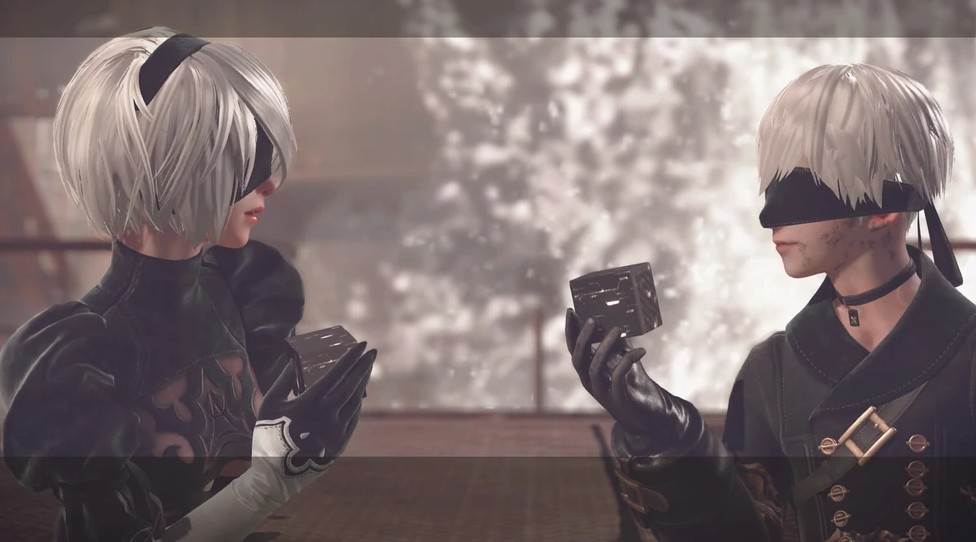
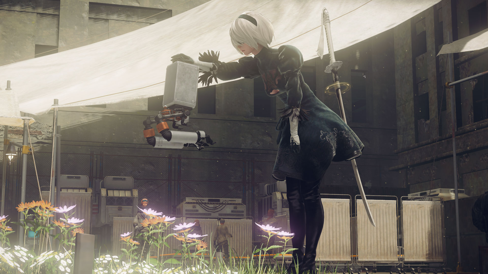
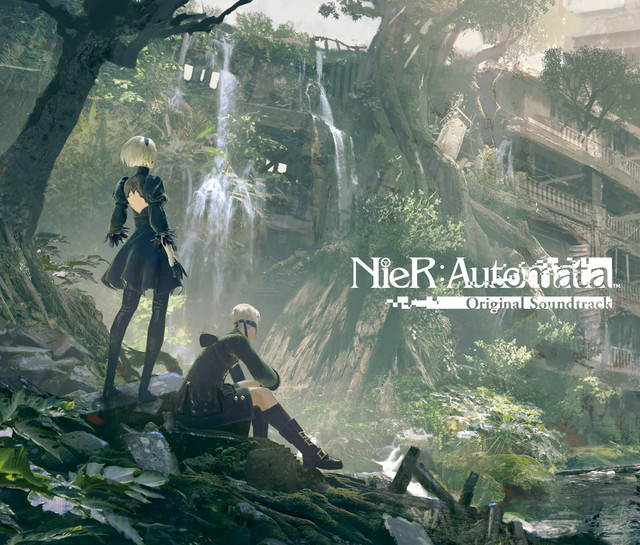

If you've been on the fence about picking up Yoko Taro's action-RPG masterpiece, this Nier: Automata review will break down why it remains a must-play experience even almost a decade after its release. On the surface, Nier:Automata presents itself as a stylish sci-fi game about androids taking down alien robots. But beneath the flashy hack-and-slash combat lies a deeply emotional, philosophical, highly-rated story-driven game that uses the video game medium in ways no other title ever has.
Gameplay That Never Gets Old

Developed by PlatinumGames — the studio behind Bayonetta and Metal Gear Rising — it's no surprise that Nier:Automata delivers some of the most satisfying combat in gaming. The swordplay is not only fast, but also highly customizable through the Plug-in Chip system that lets you modify 2B's abilities and attacks to fit your desired playstyle.
What really sets the gameplay apart, though, is how it casually shifts genres. One minute you're playing a hack-and-slash, and the next, the gameplay changes into a side-scrolling platformer or a bullet-hell shooter. And these gameplay changes make every sequence fresh and unpredictable throughout the whole experience.
A Story That Redefines Gaming Narrative
Most games simply tell you a story. Nier:Automata forces you to play through, and consequently experience, its core themes. To see the full narrative, you have to play through multiple "endings," each shifting perspectives and slowly unveiling the full context of the world. Even the optional side quests tell stories that reinforce its central message. Nier:Automata isn't just another sci-fi plot — it tackles heavy existential philosophy and asks players what it truly means to be human. And that makes it easily one of the best video game stories ever written.
Highly Lovable Characters

Every story falls flat without characters you actually care about, and Nier:Automata excels here as well. In the beginning, protagonists 2B and 9S might seem like your typical stoic-and-cheerful anime archetypes. But as the story progresses, the depth of their character and relationship is slowly revealed in a way that feels remarkably genuine.

Even side characters like Pascal and the Pods, despite being fundamentally artificial, show glimpses of warmth and empathy that make it impossible not to fall for them. This expression of humanity from mechanical beings directly reinforces the core themes of the game, making the narrative impact hit that much harder.
Soundtrack That Crosses Languages

It's impossible to talk about Nier:Automata without mentioning its music. It features vocals sung in a made-up "Chaos" language, allowing it to cross language barriers to evoke pure, unfiltered emotion. Whether you are wandering through an amusement park or fighting for your life in a desert wasteland, the music never fails to elevate every moment, giving it a place among the best video game soundtracks in history.
The Verdict
Nier: Automata is more than just its cool combat and fan-service character design — it is a game that keeps you thinking and feeling long after you finish it. If you love deep narratives, incredible atmosphere, and unique gameplay, it is an undoubtable masterpiece that you should absolutely experience for yourself. It's one of the five games on our must-try list for exactly this reason.